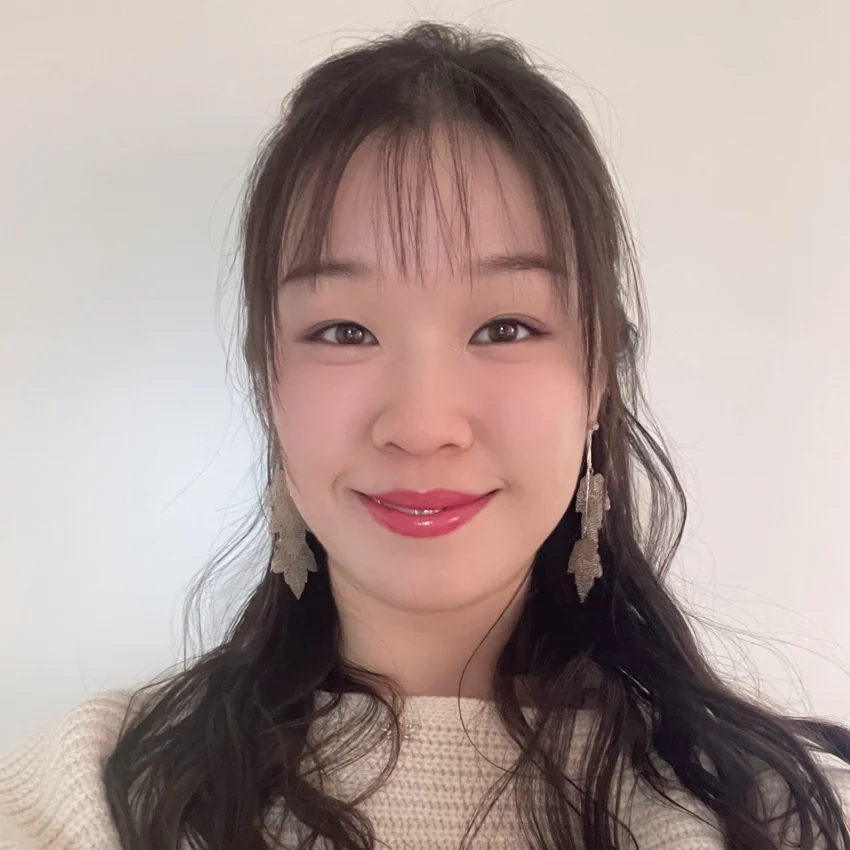

Member
Cheuk Ting WU, Dr. sc. nat.
Ting | Postdoctoral Researcher & SciComm Lead
I am a postdoctoral researcher at the University of Bern specialising in spatially fractionated radiotherapy for liver cancer. My work focuses on translating complex radiation techniques into improved clinical outcomes. Beyond the laboratory, I am the creator and host of 粵講愈健康 (Cantonese Health Talk with Dr. Wu), a platform providing health education to Cantonese communities. This project combines my analytical background with digital strategy and storytelling.
I am particularly interested in building networks that support women transitioning from academia into industry leadership. My non academic life is defined by a love for learning and balance. I practice Chinese calligraphy, painting, and piano, alongside yoga, pilates, and dance. I am eager to bring my skills in innovation and communication to the biotechnology or medical technology sectors.